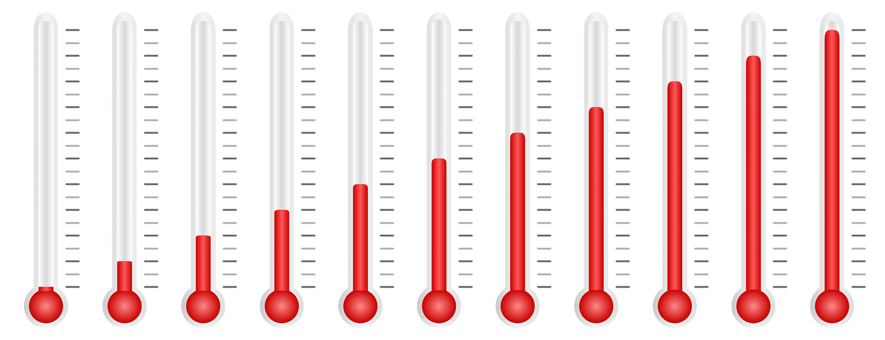
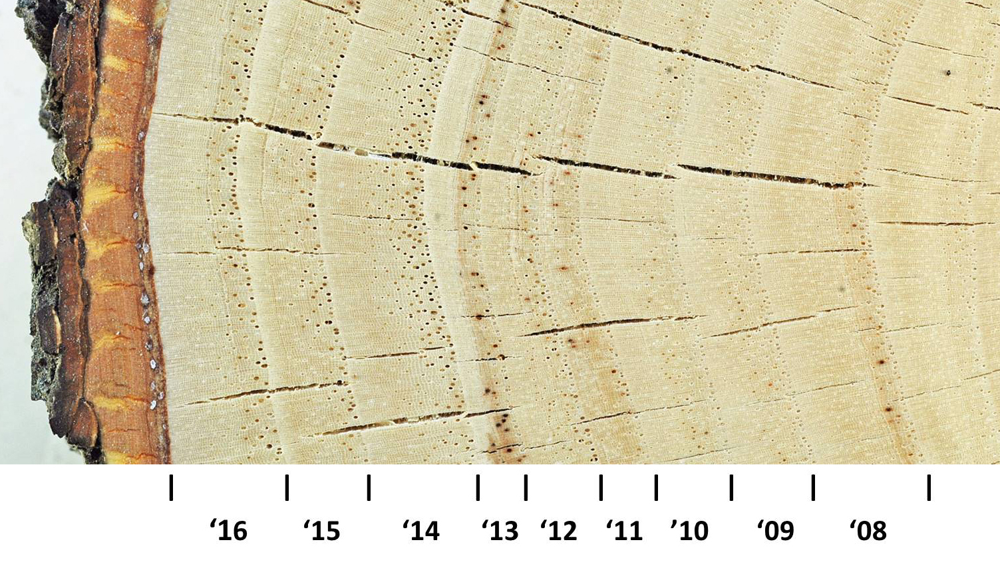
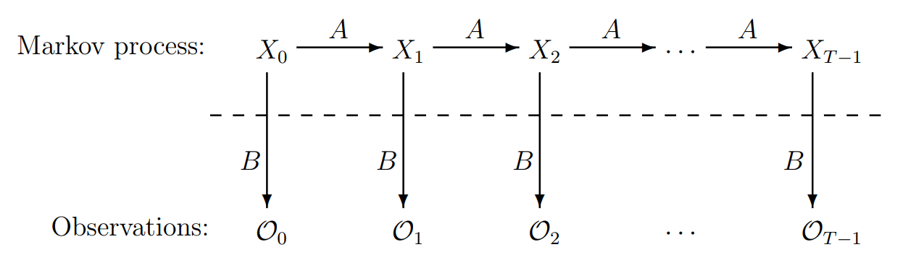
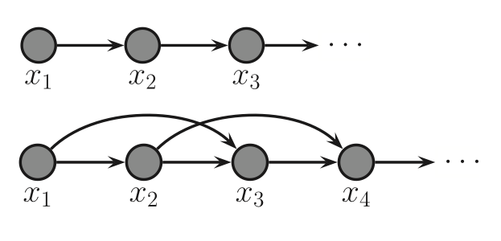

A Simple Introduction to Hidden Markov Models
Wesam Elshamy @ Diagnoss

Motivating Example*
- How to estimate average temp 1,000 years ago?
- Can't measure directly ... no records too
- Solution: Use indirect evidence

* A Revealing Introduction to Hidden Markov Models -- Mark Stamp 2018
- Each year, a tree grows new cells over old ones
- Creating one light and one dark growth rings
- Air temp affects size of growth rings
- High temps (usually) lead to larger rings
- Other factors affect ring size
- Ring size is observed
- Temp is hidden

Emission probabilities
- Temp effect on ring size is not deterministic
- Only Hot and Cold temps
- Only Small, Medium and Large ring sizes
$$ \begin{array}{ccc}
& & \begin{array}{ccc} S & \quad M \quad & L \end{array}\\
& \begin{array}{c} H\\ C\end{array} &
\left[
\begin{array}{ccc}
0.1 & 0.4 & 0.5\\
0.7 & 0.2 & 0.1
\end{array}
\right]
\end{array}
$$
State Transition Matrix
We also know probability of:
- Hot year → Hot year = 0.7
- Cold year → Cold year = 0.6
$$\begin{array}{cc}
& & \begin{array}{ccc} H & \quad C\end{array}\\
& \begin{array}{c} H\\ C\end{array} &
\left[
\begin{array}{cc}
0.7 & 0.3\\
0.4 & 0.6
\end{array}
\right]\\ \\
& \pi= & \left[\begin{array}{cc}0.6 & 0.4\end{array}\right]
\end{array}
$$
HMM Notation
$$\pi= \left[\begin{array}{cc}0.6 & 0.4\end{array}\right] \quad \text{Initial state} \\
A = \left[
\begin{array}{cc}
0.7 & 0.3\\
0.4 & 0.6
\end{array}
\right] \quad \text{State transition} \\
B = \left[
\begin{array}{ccc}
0.1 & 0.4 & 0.5\\
0.7 & 0.2 & 0.1
\end{array}
\right] \quad \text{Emission}
$$

HMM Problem
- Given tree rings $$\mathcal{O} = (S, M, S, L)$$
- What were the temps on those four years?
Probability temps HHCC generating rings SMSL
$$ P(HHCC) = 0.6(0.1)(0.7)(0.4)(0.3)(0.7)(0.6)(0.1) = 0.000212 $$
$$\pi= \left[\begin{array}{cc}0.6 & 0.4\end{array}\right] \quad \text{Initial state} \\
A = \left[
\begin{array}{cc}
0.7 & 0.3\\
0.4 & 0.6
\end{array}
\right] \quad \text{State transition} \\
B = \left[
\begin{array}{ccc}
0.1 & 0.4 & 0.5\\
0.7 & 0.2 & 0.1
\end{array}
\right] \quad \text{Emission}
$$
Probability of each state sequence generating SMSL
$$
\begin{array}{ll}
\text{state} & \text{probability}\\
\hline
HHHH & .042787\\
HHHC & .003635\\
HHCH & .073320\\
HHCC & .022017\\
HCHH & .005193\\
HCHC & .000415\\
HCCH & .031364\\
HCCC & .009451\\
CHHH & .114031\\
CHHC & .009762\\
CHCH & .195451\\
CHCC & .058573\\
CCHH & .048811\\
CCHC & .004154\\
CCCH & .293073\\
CCCC & .087963\\
\hline
\end{array}
$$
Method 1
State sequence with max probability $$ P(CCCH)= .293073$$
Method 2
State with max probability at each step
$$
\begin{array}{lllll}
\hline
& 0 & 1 & 2 & 3\\
\hline
P(H) & 0.188182 & 0.519576 & 0.228788 & 0.804029\\
P(C) & 0.811818 & 0.480424 & 0.771212 & 0.195971\\
\hline
\end{array}
$$
Most likely sequence of states
CHCH
Both methods are correct
Problem 1
$$
\begin{array}{rl}
\text{Given:} & \begin{array}{rl}
\pi & \text{Initial states prop}\\
A & \text{State transition prop}\\
B & \text{Emission prop}\\
\mathcal{O}_0, \mathcal{O}_1, \dots & \text{Observation sequence}
\end{array}\\
\hline
\text{Find:} & \text{Probability of given observation sequence}
\end{array}
$$
Problem 2
$$
\begin{array}{rl}
\text{Given:} & \begin{array}{rl}
\pi & \text{Initial states prop}\\
A & \text{State transition prop}\\
B & \text{Emission prop}\\
\mathcal{O}_0, \mathcal{O}_1, \dots & \text{Observation sequence}
\end{array}\\
\hline
\text{Find:} & \text{Optimal state sequence (we did that)}
\end{array}
$$
Problem 3
$$
\begin{array}{rl}
\text{Given:} & \begin{array}{rl}
\mathcal{O}_0, \mathcal{O}_1, \dots & \text{Observation sequence}\\
N & \text{Number of states}\\
M & \text{Number of observation symbols}\\
\end{array}\\
\hline
\text{Find:} & \begin{array}{rl}
\pi & \text{Initial states prop}\\
A & \text{State transition prop}\\
B & \text{Emission prop}\\
\end{array}
\end{array}
$$
When to use HMMs
Time series problems with hidden, discrete states
Speech recognition
- Given: audio recordings of words
- Find: hidden states (words: yes, no)
Second order Markov chains
- States have longer memory
- Each state depends on two preceding states
- Could improve performance
- Complicates problem solving
